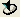

First, we will specify a simple hierarchical finite state machine modeling language. Our metamodel will describe states and transitions. States can be connected together by transitions. We also allow states to contain other states.
Note: GME has an import/export from/to XML feature for its save files in the File menu. Each step producing a new GME model here is exported to xml in the Doc\Tutorials\T1 subfolder of the GME program folder, so that you may import it to check against your work to see if you are on the right track. Each step with a savefile will have a link to the xml file following the instructions.
Start GME. You may have to register the MetaGME paradigm. To do so, invoke File/Register Paradigms… and add the GME built-in metamodeling environment by pressing the Add from file… button. Select the MetaGME.xmp file in your GME program folder in Paradigms\MetaGME\ subfolder.
You have to create a new project. Invoke File/New Project from GME. A dialog box pops up to let you select the paradigm the new project will be based on. Since we are creating a metamodel, the paradigm will be MetaGME. Select it and press the Create New... button. The next dialog asks you to specify the kind of the data storage you want to use. Simple models are usually stored in project files, so press Next. The final dialog box allows you to name your project file. Enter your project file name (e.g. FSM-Meta.mga) and press OK. The file type for metamodels (and models as well) is MGA.
Now you have an empty project named FSM-Meta, based on the MetaGME paradigm, containing only a root folder.
Add a new paradigm sheet to the root folder. Right click on the root folder in the Browser window (usually located on the right hand side). If it is not shown, select View/Browser on the menu bar on the top. Your root folder’s name is the name of your project file by default. (In our example it is FSM-Meta.) Select the ParadigmSheet option within the Insert New Model in the context menu. A new object named NewParadigmSheet is created under the root folder. Double click to open it. You will see an empty window in the user area.
First, make sure the current aspect is ClassDiagram. The available objects to define your model are in the Part Browser window. (Usually it is located at the bottom of the user area. If it is not shown, select View/Part Browser on the menu bar on the top.) The tabs show the available aspects, in this case the ClassDiagram tab should be selected.
In our simple metamodel example you will need a model object and a connection object. Drag these objects onto your paradigm sheet. Name the model “State” by clicking on the model object and editing the name in the Attribute Panel and name the connection object “Transition”. If the Attribute Panel is not visible select View/Attribute Panel from the top (You may give another name to your object, but be aware of XML naming conventions and do not put white space in your object names. Names beginning with numbers are also not supported.)
In GME you always have to declare the topmost model(s), which can be added to the root folder in the target environment. Set the “In root folder?” attribute of the State model by clicking the object and using the Attribute Panel, changing the “In root folder” box from false to true.
To demonstrate clearly the direction of the flow between the states we want to use a directed Transition in the target FSM paradigm. So, set the “Line end” attribute of the Transition connection object to “Arrow”. To perform it, click on the Transition object and in the Attribute Panel, select Arrow in the combo box next to the Line End attribute.
Our rules were: States are connected together by transitions and states can contain other states.
The specification of a connection involves three participants: the source, the destination and the connection itself. This type of relationship can be defined with the help of a connector object in GME. Drag your connector onto your sheet. Create three connections: (1) one from the State object to the connector object, (2) another one from the connector object back to the State object, (3) and a third one between the connector object and the Transition object. Connections are created in Connect Mode. (Select on the toolbar. In Connect Mode, when you move your mouse onto an object, its border color will change to red indicating that it may be selected as a participant of a connection. Moreover, you can determine the join point of your connection moving your cursor near the center of a borderline of your object. If you do not select any border, GME will try to optimize your connections automatically every time you move one of your objects.)
GME asks you, what type of relation you would like to have if there are more than one options. By creating a connection between the Transition object and the connector object your choices are “SourceToConnector” and “AssociationClass”. Since we would like to have a Transition connection between two States in our target FSM paradigm, your choice will be AssociationClass.
Another relationship we need to define is the containment of states by other states. This is accomplished by a containment link starting from and also directed to the State model object itself. States must contain Transitions as well, so you have to add the Transition connection object to the State model object.
And there you are. You have the class diagram for the simple finite state machine on your screen. (See Figure 1.)
Figure 1: Simple finite state machine class diagram
You have to define at least one aspect for your paradigm. Switch to Visualization aspect by using the Aspect combo box in the header of your paradigm sheet window (or the tabs in the Part Browser). Drag an aspect object onto your sheet and name it (e.g. FSM). Switch from Edit Mode to Set Mode (select  on toolbar) and right click on the aspect object. You can include objects in your aspect by left clicking on the desired objects in your metamodel. Select both the State and the Transition objects in your sheet.
Go to Connect Mode and connect your FSM aspect to the State model specifying that States have FSM aspect. (See Figure 2.)
Figure 2: FSM aspect
Although you can interpret your model without defining any attributes, to have our simple paradigm more realistic we define two attributes for the Transitions: the “Condition” and the “Output”. The Condition determines, which transition should be activated, and the Output tells us the result of this action.
Switch to the Attributes aspect by using the Aspect combo box in the header of your paradigm window. Drag two FieldAttribute objects onto your sheet. (Name them Condition and Output.) Switch to Connect Mode and connect the attributes to the Transition connection object. The new attributes will be listed in the Transition connection object. (See Figure 3.)
Figure 3: Attributes of the Transition
Note: You could define constraints, more attributes or objects for your metamodel. This simple tutorial demonstrates only the basic steps.
Before you can create models using your new paradigm you have to interpret the metamodel. Create your paradigm by pressing the i button on the toolbar. In the Configure Aspect Mapping dialog box that pops up, you can specify aspect-mapping information if needed. Our example is too simple to do anything, so let’s press OK without any changes.
You may specify the location of the generated XMP file containing the paradigm specifications and if no errors occur, you will be able to register your paradigm by pressing Yes in the dialog box that pops up.
Through a simplified model of an Automatic Teller Machine we demonstrate how to apply the created paradigm.
Close your previous project selecting File/Close Project. Invoke File/New Project. In the paradigm dialog box select the name of the paradigm that you just created and press the Create New... button. The next dialog asks you to specify the kind of the data storage you want to use. Simple models are usually stored in project files, press Next. The final dialog box allows you to name your project file. Enter a name (e.g. ATM.mga) and press OK. In the Browser window, right click to insert a State model into your root folder.
Now you can create a hierarchical finite state machine. A simplified Automatic Teller Machine is shown in Figure 4.
Figure : Simplified model of an Automatic Teller Machine
| << Previous Lesson | Complete List | Next Lesson >> |